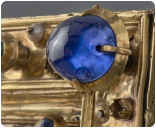
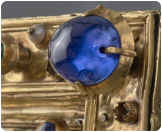

En 1791, la reliure comptait 31 saphirs, 24 rubis, 29 émeraudes, 98
perles.
Aujourd'hui, la reliure restaurée compte seulement
15 saphirs, 10 rubis,
25 émeraudes, 36 perles qui ont fait l'objet d'analyses scientifiques et
de
provenance.
 



 
